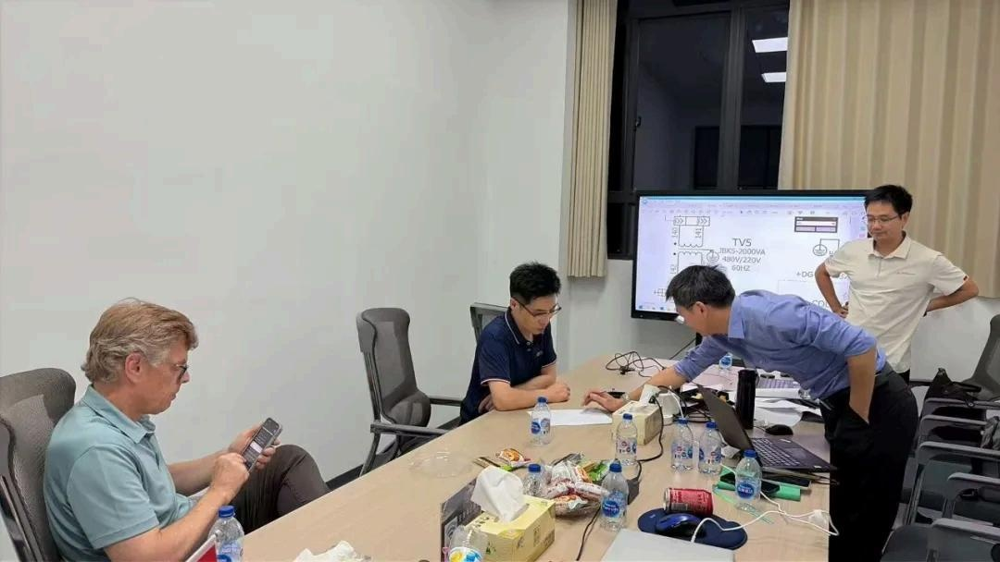
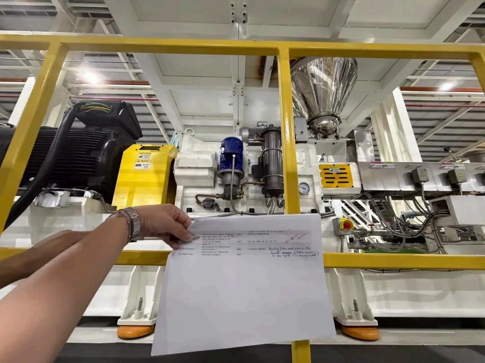
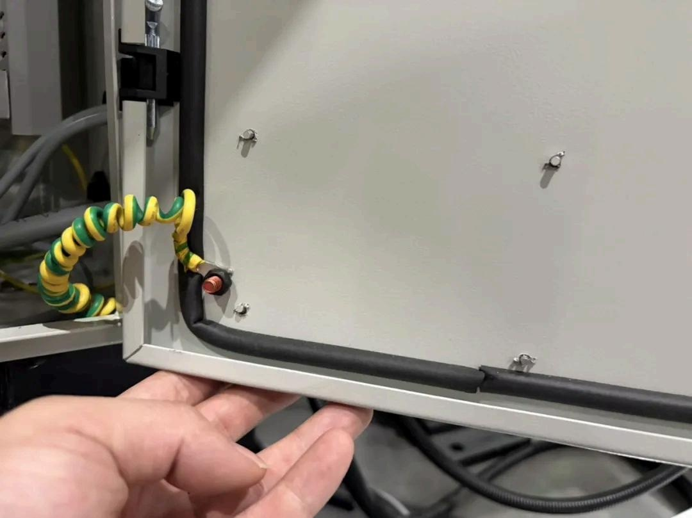
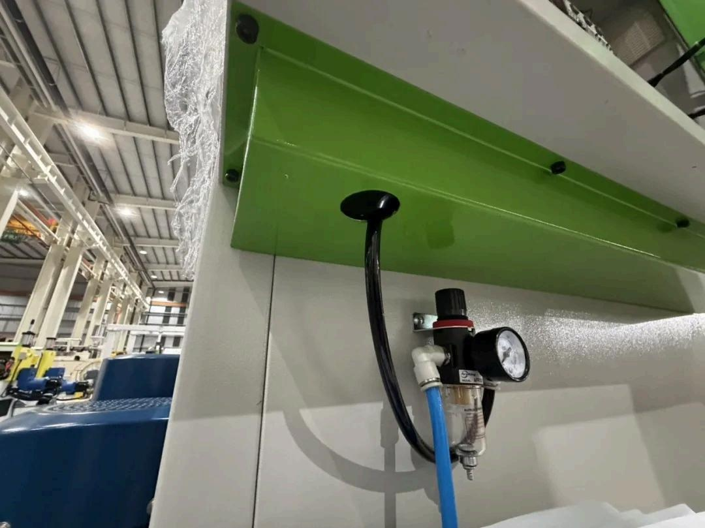
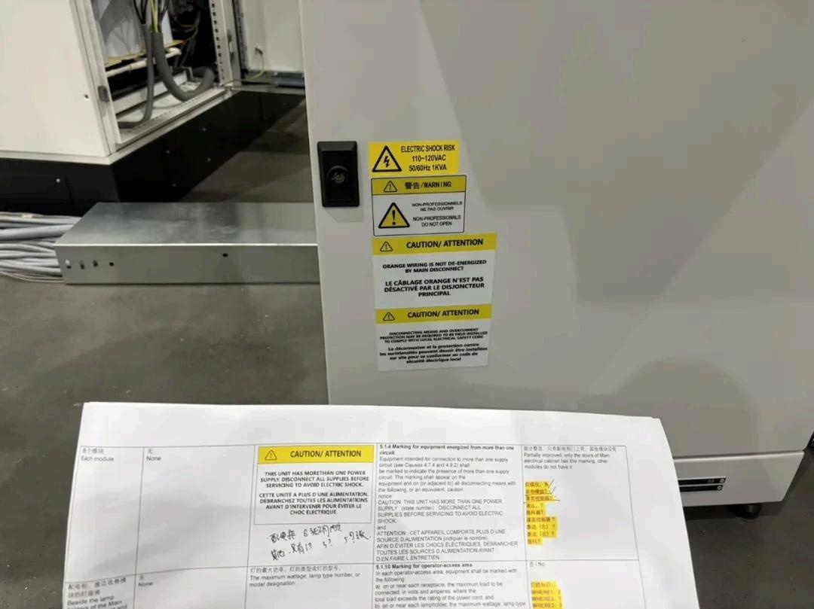
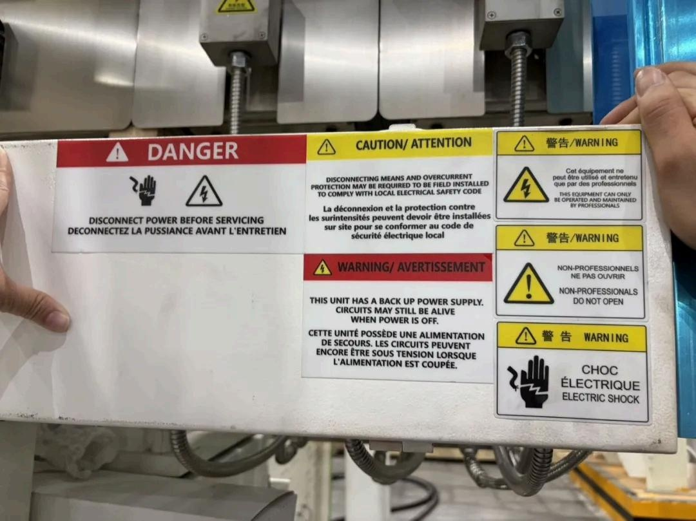
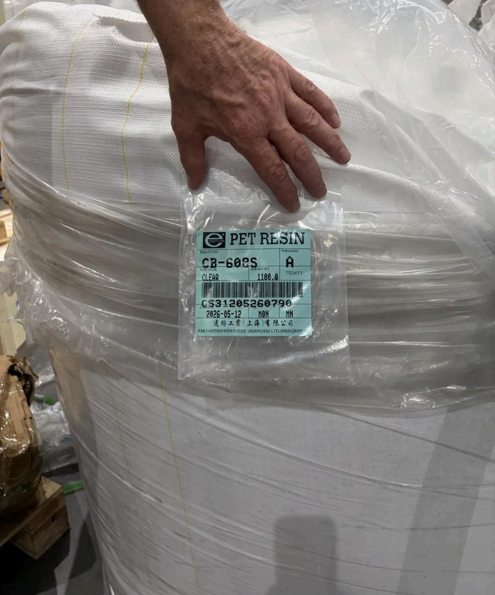
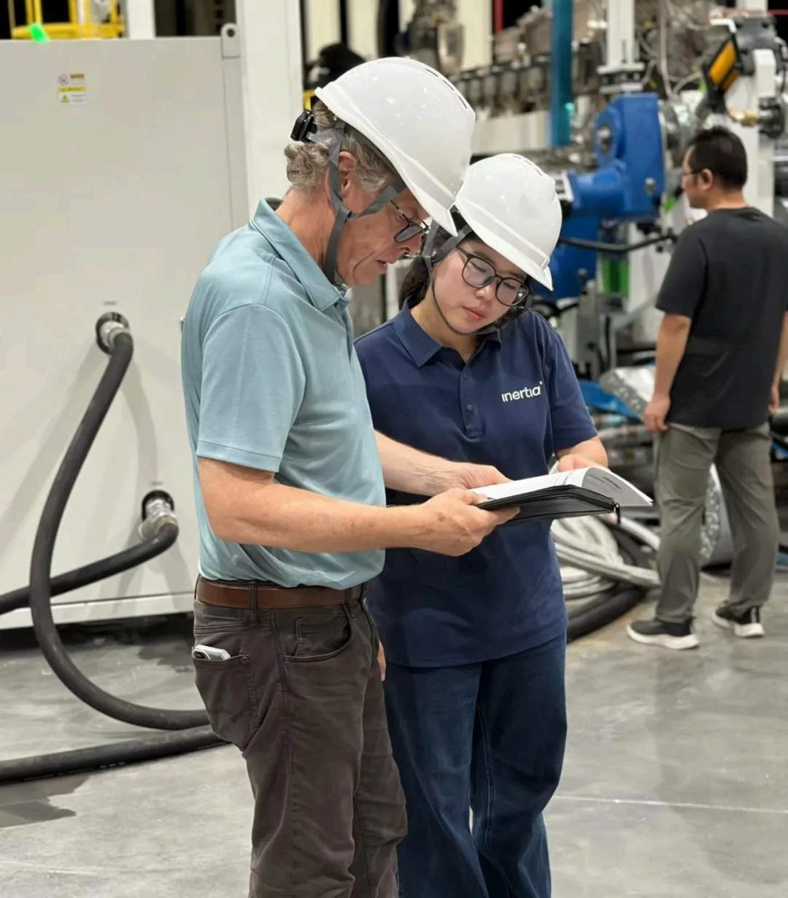
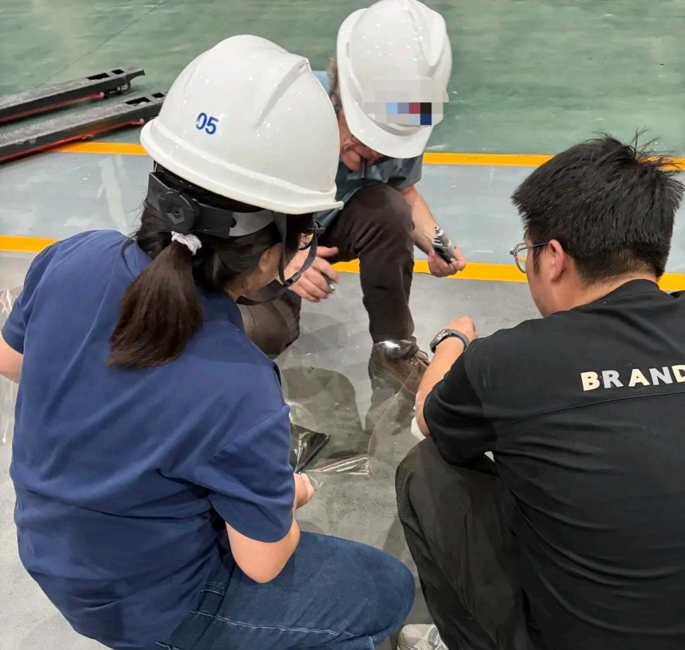

At Inertia Guangzhou, we deal with cross-border projects almost every day: design in Toronto, production in Guangzhou, customers in North America. We know that whether a project makes money — and delivers on time — depends on everything beyond the equipment.

An equipment quote is often just the tip of the iceberg in a cross-border manufacturing project. When a project spans time zones, languages, and standards, what really costs money is communication drift, management overhead, compliance, and the hidden price of rework. This article looks at the money you don't see in cross-border projects.
Part 1 Equipment Is a "List Price," Not the "Total Price"
When people talk about manufacturing projects, they first think of equipment: injection molding machines, SMT lines, machining centers — each with a clear quote. But equipment is only a tool of production; it does not generate profit by itself. The system that keeps equipment running efficiently and producing qualified parts is what determines a project's true cost.
The same equipment, under different management systems, produces very different results: yield, on-time delivery, traceability, speed of change response. These are the real cost components hiding behind equipment quotes.


Part 2 The Most Expensive Hidden Cost: Lost Context
In cross-border projects, every "I thought you understood, but you didn't" is real money. Design intent gets distorted as it travels through emails, translations, and meeting minutes; one misunderstanding can mean a mold modification, a scrapped material lot, or a week of delivery delay.
Inertia's answer is the dual-shore model. The Toronto team understands design intent in the client's language; the Guangzhou team executes in the language of the production floor. Both locations collaborate through unified project and quality systems, so context is not lost across the ocean. This is not a slogan — it is our daily practice.


Part 3 Certification and Systems: Paying for "Compliance" or Investing in "Trust"?
Another big line item in cross-border manufacturing is certification and compliance. ISO 13485, ISO 9001, FDA registration — these are not wall decorations; they are the entry tickets to regulated markets. Without them, no matter how advanced the equipment, products cannot enter North American or European supply chains.
At Inertia, certification is not a one-time investment but a continuously maintained system, validated by annual surveillance audits. What this money buys is customer confidence in supply chain stability — and in the medical device industry, confidence is orders.


Part 4 Ultimately, the Most Expensive Thing Is "Human" Certainty
Equipment can be bought and certifications can be earned, but the hardest thing to replicate is a team that can run a cross-border project: people who understand design, manufacturing, quality, and the client's language — and connect seamlessly across time zones. Inertia's engineers and project managers are exactly such a source of certainty.
The people behind every process step on the floor, every alignment in the meeting room, every voice on the cross-ocean call — the most expensive investment in a cross-border project is always human certainty. And the return is a client who can trust a partner that "listens, delivers, and can be relied upon."


Capabilities Inertia's Cross-border Manufacturing Capabilities
- Dual-shore project management: Toronto R&D + Guangzhou manufacturing, "no lost context" across time zones
- ISO 13485 / ISO 9001 certified systems: compliant qualifications for regulated medical device manufacturing
- Full-cost perspective: from DFM review to production ramp, eliminating hidden costs early
- Traceable supply chain: material lot traceability and quality records supporting cross-border compliance audits
Equipment is a visible list price; systems and people are invisible — yet they determine the success of a cross-border manufacturing project. Spending every dollar on system certainty is Inertia's understanding of cross-border manufacturing, and our responsibility to our clients' costs.